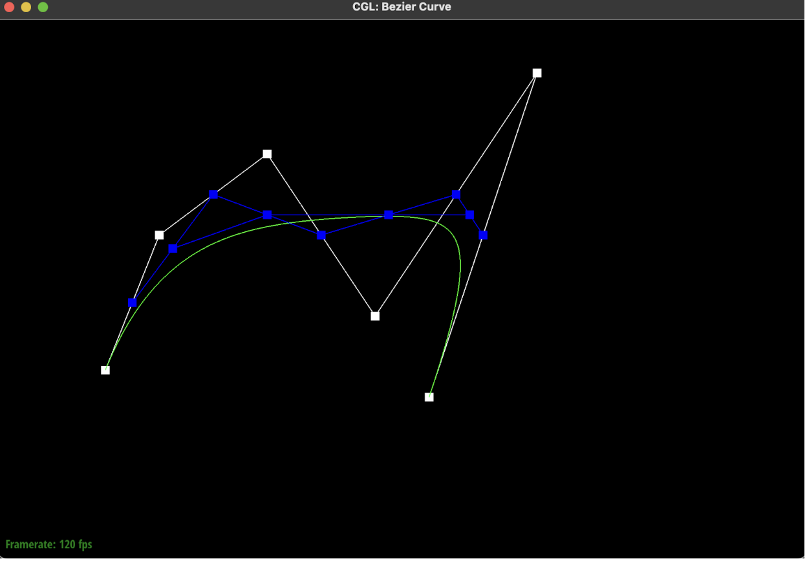

CS184/284A Spring 2025 Homework 2 Write-Up
Link to webpage: cal-cs184-student.github.io/hw-webpages-matcha234/hw2/index.html
Link to GitHub repository: https://github.com/cal-cs184-student/sp25-hw3-matchaaa

Overview
We essentially built a system that can represent, refine, and manipulate 3D models using mathematical techniques for curve and surface evaluation that we learnt this semester in CS184, as well as mesh refinement.
We started by implementing 1D de Casteljau subdivision to compute Bezier curves. Then, we extended this to 2D to handle Bezier surfaces with separable 1D de Casteljau. For part 3, we implemented area-weighted vertex normals, which required us to iterate over neighboring vertices, compute cross products, and weight the normal by the area of each triangle. This taught us how to compute smooth vertex normals for rendering. We also worked on edge flips and splits, which are fundamental operations for manipulating triangle meshes. The edge flip required changing the connectivity of adjacent triangles, while the edge split involved adding new vertices and edges to refine the mesh. Finally, we tackled Loop subdivision for mesh upsampling, which was a more advanced operation that allowed us to smooth and refine a mesh iteratively.
We really liked how we had to implement a lot of the concepts we had seen in lecture in code, and each task sort of built upon the last. It made the theoretical knowledge presented much more concrete and we were able to learn by doing. It was also quite rewarding to see the final, correct meshes once our extensive debugging efforts came to a close.
Section I: Bezier Curves and Surfaces
Part 1: Bezier curves with 1D de Casteljau subdivision
De Casteljau’s algorithm consists of recursive subdivision. Given a vector of control points, we want to get intermediate points through linear interpolation. De Casteljau recursively calculates intermediate points between each pair of control points at parameter t until we only have one point on the Bézier curve.
Given a vector of size n, we wanted to get n-1 intermediate points in the output vector. We looped through the n-1 points by obtaining the size of the input vector, and then performed linear interpolation to calculate the n-1 intermediate points at parameter t using the following formula:
p[i] = (1 - t) * p[i] + t * p[i + 1]
In Task 1, we only performed one step of de Casteljau’s, so one lerp iteration, but this computation would be performed repeatedly until one point was left in a full run of de Casteljau’s algorithm.
Below, we have an entire run of six steps of de Casteljau's algorithm for a Bezier curve with six original control points. With each step, the number of control points decreases by one, until we are left with one final point, highlighted in pink in step 6.
|
|
|
|

|
|
|
|
|
This is a slightly different Bezier curve generated by moving around the original control points and changing the parameter t.
t by scrolling along the curve.Part 2: Bézier Surfaces with Separable 1D de Casteljau
de Casteljau’s algorithm can be extended to Bézier surfaces in 3D by applying the 2D version of the algorithm on each row of the input matrix. This means that for each row of n points, we will calculate n-1 intermediate points using linear interpolation, which will then become n-2 intermediate points and so on until we have only one point remaining. Since we do this for every row, this step should produce a nx1 vector of 3D points. For these linear interpolations, we will use the parameter u.
With this nx1 vector of 3D points, we apply the de Casteljau algorithm again using parameter v. Specifically, we will interpolate the n points to get n-1 points. Then, we will interpolate those n - 1 points to get n - 2 points, and so on until we have only one point remaining. That final point will be our final output.
To implement this, we used three functions:
-
evaluateStep: Performs linear interpolations on a vector of n points using parameter t and outputs a vector of n-1 points. -
evaluate1D: Takes a vector of n points and a parameter t, and performs the entire de Casteljau’s algorithm. It callsevaluateStepfor n-1 iterations until only one point remains. It returns one 3D point. -
evaluate: Takes parameters u and v. It appliesevaluate1Dwith parameter u on each row of the input matrix. With the resulting n×1 vector, it callsevaluate1Dagain using parameter v and returns the final 3D point.

Section II: Triangle Meshes and Half-Edge Data Structure
Part 3: Area-weighted vertex normals
We followed these steps, as outlined in the spec, to implement area-weighted vertex normals:
- Step 1: Iterated through all neighbors of the vertex using the half-edge data structure.
- Step 2a: For each pair of vertices, we found the cross product (this was the normal vector).
- Step 2b: Computed the area between the 3 vertices using the cross product.
- Step 2c: Weighted the normal vector by its area and added it to the running sum.
- Step 3: After iterating through all neighbors, we normalized the sum by dividing it by its norm to get the final normal.

|
|
Part 4: Edge Flip
For this part, we found it helpful to refer to the following diagram which we got from the website linked on the Half-Edge Primer. We set variables for all of the half edges, edges, faces, and vertices that are labelled in the diagram, and set pointers accordingly.
Instead of keeping track of all the objects that needed new reassignments and only reassigning those specific things, we just reassigned every single object (even if nothing changed).
We tried to use the provided debugging functions that would print out the locations of the objects; though it was helpful to have a reference in the terminal, we didn’t find this the most helpful as we were facing an infinite loop problem at some point (most likely due to a false pointer assignment, which were fixed once we review our pointer assignments). Our main issue ended up being that we were only focusing on the 6 half-edges on the inside of the triangle and we only reassigned pointers for the two half-edges associated with the edge we were flipping.
After running into a lot of issues that we couldn't figure out the root cause for, we decided to also keep track of and reassign pointers for the half-edges on the outside of the triangle as well as the other half-edges inside of the triangle. So in total, we were keeping track of and reassigning pointers for 10 half edges. In this spirit, we also reassigned all 4 vertices to the newly updated half-edges, as well as the edges and the faces.
After that, we faced some issues in assigning wrong variables to wrong pointers (just some silly mistakes), and to solve that we first tried to look through the code together while referring to the diagram; and if that didn’t work, we tried to look at it in silence individually.
Ultimately, having the resources on the spec and mindfully rechecking our work was what really helped the most in building understandment and establishing the correct approach.
Part 5: Edge split
Similar to task 4, referring to a diagram really helped us understand what new objects were coming into the mesh and how to assign these new objects, as well as the preexisting objects. We drew out two triangles, one pre-edge-split and one post-edge-split and referenced it throughout our implementation.
We made sure to handle the base case for boundary edges, create new edges, vertices, faces and half-edges and then reassign all components.
We also added notes onto our diagrams, as seen below, essentially illustrating our thought process.
Below are some images of our mesh before and after some split and flip operations!
|
|
|
|
|
|
We were originally instantiating new vertices using VertexIter(), and the same for half-edges, faces and edges. We were running into segmentation faults before we realised that we were instantiating our new components incorrectly. We did a deep read through halfEdgeMesh.h and then discovered that there was a newVertex() function! Figuring out where we were going wrong required a lot of commenting out code, running it and seeing if the segfault was still occurring.
Part 6: Loop subdivision for mesh upsampling
Using the recommendation from the spec, we split this task into 5 different steps. First, we calculated the new positions for the old vertices. Second, we calculated the new positions for the new vertices. Third, we iterated through all the old edges and split all of these edges. Fourth, we flipped any new edges created in the third step if they connected to an old vertex and a new vertex at the same time. Last, we updated all the vertex positions (both new and old) to their newly calculated positions (calculated in step 1 and 2).
An interesting implementation trick we used in the third step was to not flag any edges that we weren’t flipping, even if they were new edges. More specifically we didn’t flag the parallel edge that is created when we split an edge (there’s a total of 3 edges created, 2 of which are perpendicular to the original edge and 1 of which is parallel). This helped us simplify step 4 (we could just use one conditional statement to check whether that edge should be flipped or not, instead of checking for different edge cases).
We also decided to store the new position of the new vertex that was created after the edge split in its newPosition attribute, and just loop through every single vertex at the very end of this entire algorithm and just update all of their positions to be newPosition. This allowed us to simplify our last step, instead of having to check whether a vertex is new or not, and only then updating its position.
Overall, some debugging tricks we used is making educated decisions about what code to change or look through in detail based on error messages (e.g. if we had an infinite loop, we would look at the section of code where we reassigned pointers or had while loops, if we had a segfault, we’d look out for invalid accesses).
Some issues we ran into and how we solved them are detailed below:
- At first, we were trying to access class attributes such as newPosition and isNew through Vertex objects instead of VertexIter objects. We realized this when we were getting segfaults when testing our program and we resolved this issue relatively quickly (as we knew that we should be looking for an incorrect/invalid memory access).
- Previously we used Size instead of doubles for n and u, which are intermediate variables used in the calculations of the new vertex positions for old vertices. Visually, our old vertices just looked like they were in wrong positions even though are new vertices were smoothed over correctly. This was likely due to false rounding. Changing the types to doubles solved this issue.
- Using the unimplemented computeCentroid function and empty centroid attribute to find the sum of all neighboring vertices also ended up in false new positions for old vertices. We solved this by implementing the algorithm to find the sum of neighbors in the function, taking inspiration from the example code in the spec.
- Only updating the vertex positions of all old vertices - we didn’t realize that the new vertex should be reassigned to a new position that we calculate during step 2 as well. We corrected this by setting all vertex positions to their newPosition attribute in step 5, and setting the newPosition attribute of the newly created vertex in step 3 to be equal to whatever we calculated in step 2.
Some things we noticed about the cube after several iterations of loop subdivision was that the edges didn't really smooth out perfectly. The sharp corners and edges kind of still stick out, as shown below.

To alleviate this, we experimented around with different edge split and edge flips while preprocessing. Our best attempt was when we split the edges across each face once when the figure is still a cube (so a total of of 6 edge splits). The figure ends up with edges that are more rounded out after a few iterations of loop subdivision. Though the cube ends up being subdivided more symmetrically and evenly, this shape ends up being more cube-like than spheric.